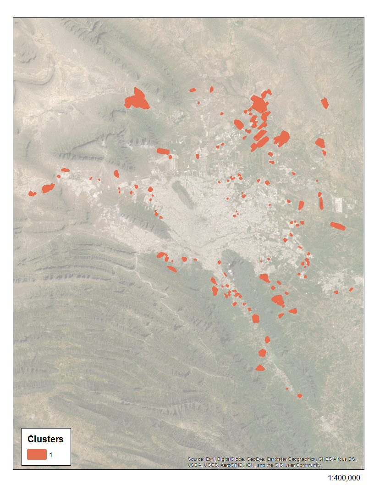

Este cluster está compuesto por calles mayoritariamente radiales que hacen uso de calles colectoras para conectarse entre sí. Las comunidades que lo componen se encuentran en la periferia, y en secciones urbanas o “manchas” no integradas al AMM. El cluster representa zonas exclusivamente residenciales, con viviendas de baja a media densidad. La red de calles muestra una alta centralidad de grado, con muchas conexiones entre los nodos de las comunidades, y una intermediación baja, donde pocos nodos forman parte del camino más corto entre dos lugares.
Simetría cuadricular
minmax
Cercanía al centro
Relación empleo vivienda
Densidad
Intermediación
Superficie de pavimento per cápita

1
2
3
4
5
6
7
8
9
10
11
Tipología de Vialidades
Esta sección presenta los resultados de un análisis de la topología de calles de Monterrey comprendida como una red de nodos y ejes. Las intersecciones de calles son los nodos y los tramos de calles representan los ejes. Se corrió un algoritmo de detección de comunidades (método Louvain) con la cartografía vial de INEGI. Una vez identificadas las comunidades y depurado el archivo, se construyeron 954 polígonos que representan comunidades con una topología de calles diferenciada de la de sus vecinos. Finalmente, se crearon una serie de variables para representar los grados de centralidad en cada comunidad, así como elementos del entorno como densidad poblacional y de empleos, diversidad de empleos y proporción de empleos a viviendas. Se aplicó un método de reducción de dimensionalidad a estas variables y posteriormente se aplicó un algoritmo de agrupamiento de k medias sobre las primeras cuatro componentes. El resultado es una tipología de 11 estructuras topológicas viales que se repiten recurrentemente en la ciudad.
Esta sección enlista los 11 tipos ideales, presentando tres elementos gráficos para cada una: 1) un mapa topológico representativo de la topología; 2) un mapa con la ubicación e las comunidades que tienen este tipo de topología; 3) un video que ilustra la sensación de navegar por este tipo de calles.
Esto es importante porque cada tipo de vialidad y comunidad impone un tipo de condiciones para hacer un entorno caminable. Por ejemplo, el trazo de cuadrícula con usos mixtos incentiva los viajes peatonales y solamente lo encontramos en la zona central de Monterrey. En la periferia urbana, en las zonas de expansión, encontramos un recurrentemente un tipo de trazo urbano radial que es poco amigable con el peatón. Las estructuras radiales favorecen los viajes en vehículo motor por encima de los peatonales.
Te invitamos en esta sección a explorar esta tipología de 11 grupos de topología vial en la zona metropolitana de Monterrey.
Glosario
AMM: Área metropolitana de Monterrey
Comunidad: región que comparte comportamientos en el arreglo de sus calles
Cluster: conjunto de comunidades con características de morfología de calles y uso de suelo similares
Calle radial: calles que parten de una calle central o calle colectora a la que desembocan calles de acceso limitado.
Calle cuadriculada: Calles arregladas en forma de cuadrícula, similar a las que se encuentran en el centro de una ciudad
Calles colectoras: calles que permiten la integración de calles locales o de acceso limitado.
Nodo: punto final de un segmento de calle, ya sea la terminación de la calle o una intersección con otra
Centralidad de grado: mide las conecciones que tiene cada nodo de una red, sirve para medir qué comunidades están “bien conectadas”
Intermediación: mide el número de veces que un nodo forma parte del camino más corto entre dos lugares, que puede mostrar cómo se comporta el flujo dentro de una red.